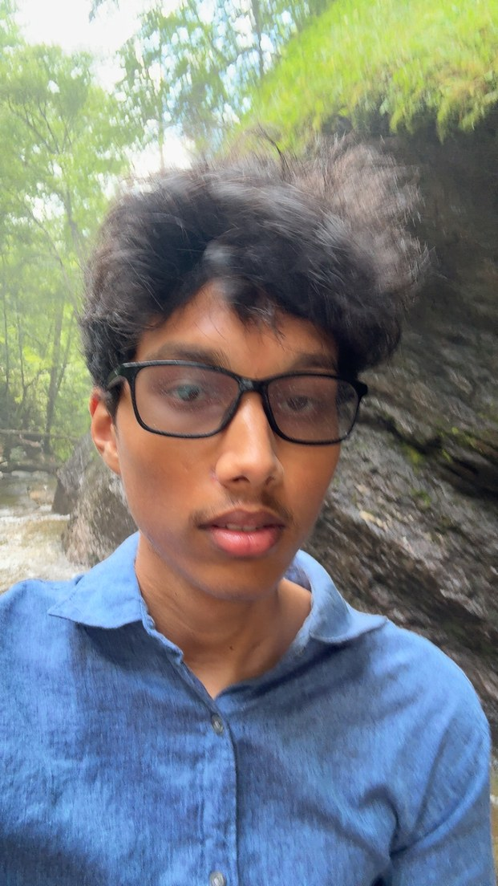

Introduction
Neelesh Reddi ~ Noble Raven

Hey there, I'm Neelesh Reddi! I am a third-year student at the University of North Carolina at Charlotte, majoring in Data Science and minoring in Software Development. I'm interested in machine learning and AI, especially natural language processing and the challenge of turning unstructured data into something useful. In the future, I want to build tools that help people make sense of complicated information without hiding the uncertainty that comes with real data. Outside of school, I enjoy chess, music, and gaming.
- Personal Background: I was born in India and spent most of my childhood in California. I moved to Raleigh in 2021.
- Professional Background: I cofounded Data4Youth, a nonprofit organization where I helped introduce data science to younger students and worked on the organization's website. I have also worked on mobile app projects, building features, testing them, and fixing issues. These experiences showed me that explaining an idea can matter as much as building it.
- Academic Background: I am a third-year Data Science major with a minor in Software Development at UNC Charlotte.
- Primary Work Computer: ASUS Zephyrus G14 laptop running Windows 11.
- Primary Work Location: I get most of my work done at my apartment.
- Alternate Computer & Location: If my laptop were unavailable, I would use a desktop computer in my apartment's study center. The campus library is another backup work location.
- Courses I'm Taking, & Why:
- ITCS3162 - Introduction to Data Mining: Required for my major.
- DTSC2301 - Modeling and Society A: Required for my major.
- DTSC2302 - Modeling and Society B: Required for my major.
- ITIS3135 - Front-End Web Application Development: An elective that fulfills a requirement for my minor.
"Exactly what you run from you end up chasing."
– Jerrod Carmichael